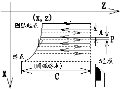

|
代码组及其含义
“模态代码” 和 “一般” 代码
“形式代码” 的功能在它被执行后会继续维持，而 “一般代码”
仅仅在收到该命令时起作用。定义移动的代码通常是“模态代码”，像直线、圆弧和循环代码。反之，像原点返回代码就叫“一般代码”。
每一个代码都归属其各自的代码组。在“模态代码”里，当前的代码会被加载的同组代码替换。
| G代码 |
组别 |
解释 |
| G00 |
01 |
定位 (快速移动) |
| G01 |
直线切削 |
| G02 |
顺时针切圆弧 |
| G03 |
逆时针切圆弧 |
| G04 |
00 |
延时等待 |
| G10 |
02 |
半径编程 |
| G11 |
直径编程 |
| G28 |
|
经中间点快速返回中间原点 |
| G27 |
00 |
快速返回机械零点测试 |
| G32 |
07 |
英制螺纹切削 |
| G33 |
公制螺纹切削 |
| G60 |
08 |
系统参数设置 |
| G61 |
判参数值跳转 |
| G62 |
任意二次曲线切削 |
| G70 |
14 |
附加的Y轴快速定位 |
| G71 |
附加的Y轴切削进给 |
| G72 |
附加的Y轴坐标设置 |
| G73 |
附加的Y轴回机械零点 |
| G74－G77 |
|
攻牙循环 |
| G78 |
|
啄钻循环 |
| G80 |
|
柱面锥面粗车循环 |
| G81 |
|
端面,锥面粗车循环 |
| G82/G83 |
|
英制/公制螺纹加工循环 |
| G84/G85 |
|
Z轴/X轴方向切削的球面粗车循环 |
| G86 |
|
精加工子程序循环 |
| G87 |
03 |
局部循环 |
| G88 |
|
Z轴方向切槽循环 |
| G89 |
|
X轴方向切槽循环 |
| G92 |
|
浮动坐标系设定 |
| G93 |
|
设置坐标偏置 |
| G96 |
|
设置恒线速控制状态 |
| G97 |
|
取消恒线速控制状态 |
| G98 |
10 |
设置每分钟进给速度状态 |
| *G99 |
设置每转进给速度状态 |
|
1.格式: N_ G0 X(U)_ Z(W)_ 》
其中: X(U),Z(W)为定位的终点坐标,X,Z分别为X轴和Z轴的绝对坐标,U,W分别为X轴
和Z轴的相对坐标,、相对坐标和绝对坐标用其中之一,不需移位的坐标轴可以
省略,相对坐标是相对于当前位置的位移量。
2.对于两个轴需要定位的情况,总是先两轴同时按照较短轴长度快速移动，再快速移动
较长轴的余下长度部分。
定位速度按照1号参数进行,可用H字段修改快速定位速度(41-43号参数为各轴限速)
例: 当前位置(250,400)： N400 G0 X100 W-300
|
格式: N_ G1 X(U)_ Z(W)_ 》
其中, X(U),Z(W) 为直线的终点坐标
以当前位置为直线的起点, X(U),Z(W)字段给定的位置为终点进行直线插补。进刀的速度为切削进给速度,可用F字段或2号系统参数修改切削速度
使用步进电机时进给速度F<=1200.00可保证不失步。
例:当前坐标(100,300)：
N100 G1 X50 Z200 F100
|
格式: N_ G2或G3 X(U)_ Z(W)_ R_
或: N_ G2或G3 X(U)_ Z(W)_ I_ K_
第一种格式是用园弧半径R进行编程,第二种格式是用园心相对于起点(起点即当前位置)位置(I,K)进行编程。使用步进电机时进给速度F<=1000.00可保证不失步。
其中, X(U),Z(W) 为园弧终点的坐标；
R 园弧的半径；
I 园心相对于起点的坐标在X轴的分量, G11状态为直径编程,G10状态为半径编程；
K 园心相对于起点的坐标在Z轴上的分量；
园弧插补是按照切削速度进刀的。
G2为顺时针方向,G3为逆时针方向,如图示：
园弧插补自动过象限,过象限时自动进行反向间隙补偿。
用R编程时.若R>0,则为小于等于180度的园弧,若R<0则为大于等于180度的园弧。
后刀座车床圆弧方向图示: 前刀座车床圆弧方向图示:
|
格式:N_ G4 R_ 》
执行G4系统将延时等待R秒(最小单位为0.01秒)。 |
用G10定义编程的状态为半径编程,所有X轴方向的字段值都是半径编程的,这些字段有X(U),I,A,P,R,C等。半径编程状态下,0.01的值实际对应为X轴方向的0.01mm(X轴的步进单位为0.005mm)(值与实际距离相同)。
G10可与其定G功能同时出现在一程序段之中。
Ｇ１１ 直径编程(模态,初态)
用G11定义编程的状态为直径编程,所有X轴方向的字段值都是直径编程的,这些字段
有X(U),I,A,P,R,C等。直径编程状态下,0.01的值实际对应X轴方向的0.005mm(X轴的步进单位为0.005mm)(值为实际距离的两倍)。
G11可与其它G功能同时出现在一程序段之中。
|
格式: N_ G27 》
G27将消除G93设置的系统坐标偏置和刀具偏置并使系统回到工件坐标系，快速定位到机械零点并测试是否失步。执行G27时要确保系统处于零点减速信号负方向位置，若未安装机械零点或以前未回过机械零点，将出现E45报警。回机械零点后若测试到失步，将出现E41/E42报警。55和56号参数记录下X轴和Z轴回机械零点的偏差。10号参数的E41位=0有失步即出E41/E42报警，=1时失步的偏差大于0.02时才出E41/E42报警。
当G27与M28指令在同一程序段时,G27回到机械零点后系统不测试失步,将不会出现E41/E42报警。
|
格式: N_ G28 X(U)_ Z(W)_ 》
G28将快速定位到X(U),Z(W)字段给出的中间点,再快速返回程序零点并消除G93坐标偏
置和刀具偏置，并使系统回到工件坐标系。
|
直螺纹或锥螺纹：
格式: N_ G32 X(U)_ Z(W)_ I_ P_ R_ D_ K_ 》
其中： X(U),Z(W) 定义螺纹底部位置的坐标
I 为锥度螺纹的锥度,省略为直螺纹。I的正负必须与X(U)的方向一致；
P 为每英寸牙数2.20～100.00；
R 为螺纹结束时的45度倒角在Z轴方向长度,省略则无45度退尾的功能；
D0或无D值： 单头螺纹
D1～D9： 多头螺纹的头数
D100～D200：端面螺纹（单头）
D201～D220： 单头螺纹R退尾角度=
- D缺省、或D=210、或D<201、或D>220时退尾角度=45○，两轴退尾长度（X轴为半径值）相等；
- D值在201～220间数值越大，退尾角度越小、退尾速度越慢：
D=201时退尾理论角度≈84○(最快速度退尾)；
D=220时退尾理论角度≈27○(最慢速度退尾)；
最大退尾理论角度将受到螺距限制，螺距越大最大退尾理论角度将越小，螺距为12mm时最大退尾的角度为45○。实际最大退尾角度还受负载和驱动电源限制。
K 为使用的主轴转速(每分钟转数)，小于实际转速时螺纹加工升降速更快；
G32执行的过程如下：
① X轴方向先从当前位置(G32的起点)快速移动到X(U)+I的位置(螺纹的起点)；
② 进行螺纹切削到Z轴方向的Z(W)位置,若有R字段则到Z(W)-R的位置；
③ 进行45度的R长度的退尾；
④ X轴方向快速回G32起点位置；
⑤ 若为多头螺纹（D>0），循环照样进行，但最后一刀结束时，Z轴不返回起点；
⑥ 若是多头螺纹,则重复①～⑤共D次；
前刀座 U<0,W<0 (其它方向类推)的图示：
端面螺纹：
格式：N_ G32? X(U)_ Z(W)_ P_ D_（英制）
N_ G33 X(U)_ Z(W)_ P_ D_ （公制）终点
其中 X(U)为X轴方向（端面）螺纹加工的终点坐标。
Z(W)为Z轴方向的进刀量和进刀方向。
P为每英寸牙数（G32时），或螺距0.01~12.00(G33时)。
X螺纹
D>=100 表示进行端面螺纹加工
加工过程：（主轴已转动,前刀座U<0,W<0端面螺纹加工图示）Z进刀
①Z轴进刀。 起点
②X轴进行端面螺纹加工。
③ Z轴退刀。
加工结束，停在编程的X坐标处，Z轴位置同起始位置相同。 |
格式: N_ G33 X(U)_ Z(W)_ I_ P_ R_ D_ K_ 》
其中：X(U),Z(W) 螺纹底部位置的坐标。
I 为锥度,正负必须与X(U)的方向一致,省略为直螺纹。
P 螺距,0.01~12.00mm。
R 螺纹结束的倒角长度,省略则无倒角,R>1.60。
D 见G32关于D值的说明。
K 为使用的主轴转速(每分钟转数)，小于实际转速时螺纹加工升降速更快；
螺纹切削的其它说明
1. 螺纹切削要求配1200脉冲/转的主轴编码器；
2. 螺纹进给速度的计算公式: 英制螺纹速度=主轴转速*25.4/P；
公制螺纹速度=主轴转速*P；
3. 系统要求主轴转速≤1600转/分；切削螺纹的进给速度要求≤1800.00毫米/分；
4.? 加工锥度螺纹和螺纹倒角(45度退尾)的过程中,X轴的坐标显示不能实时更新；
5．使用K（主轴转速粗略值）来调整螺纹加工升降速控制，使用步进电机时不易失步，而使用伺服电机可以更快速；当使用几个程序段加工同一螺纹时，K值必须相同。螺纹加工升降速还与X，Z轴的起始速度参数（35和36号参数）有关。 |
格式: N_ G60? D_ X_ Z_ I_ L_ 》
其中 L=1～80为系统参数号,关于系统参数见§6系统参数设置。
D=0～20 为计算因子,分别作用如下: D=0: 使L号系统参数＝0
D=1: 使L号系统参数＝X
D=2: 使L号系统参数＝-X
D=3: 使L号系统参数＝Abs(X) ;取X的绝对值；
D=4: 使L号系统参数＝原值 + X
D=5: 使L号系统参数＝原值 - X
D=6: 使L号系统参数＝X+Z
D=7: 使L号系统参数＝X-Z
D=8: 使L号系统参数＝-X+Z
D=9: 使L号系统参数＝-X-Z
D=10: 使L号系统参数＝2X
D=11: 使L号系统参数＝X/2
D=12: 使L号系统参数＝X * (Z的低字节值) ;低字节值: 0.00~2.55；
D=13: 使L号系统参数＝X / (Z的低字节值) ;低字节值: 0.00~2.55；
D=14: 使L号系统参数＝X*Z/I
D=15: 使L号系统参数＝Root(X*Z) ;X和Z的乘积开平方；
D=16: 使L号系统参数＝Root(X**2+Z**2);X平方,Z平方之和的平方根；
D=17: 使L号系统参数＝Root(X**2-Z**2) ;X平方,Z平方之差的平方根；
D=18: 使L号系统参数＝min(X,Z) ;X Z的最小值；
D=19: 使L号系统参数＝max(X,Z) ;X Z的最大值；
D=20: 使L号系统参数＝mod(X,Z) ;取摸，即X除以Z的余数；
系统内部用4字节来存放数据,为范围: -2147483648至2147483647的整数,使用参数运算时应确保数据在有效范围作运算。显示0.01的值,系统内部为1。
注意!:系统内部全部使用整数进行运算,0.01对应内部整数1,内部整数的范围是-999999999 至 999999999, 在使用G60进行运算时,要小心对待,并保证运算不溢出。
|
格式: N_ G61 L_ U_ W_ I_ D_ 》
其中 L1～L80为系统参数。L81～L83分别为当前X、Z、Y的绝对坐标值。
D 为跳转目的程序段号0～65535；
U,W,I 为条件值(至少要有一个出现在程序段中)；
它们的作用是: U: 若L号参数值=U, 则转D程序段；
W: 若L号参数值>W, 则转D程序段；
I: 若L号参数值<I, 则转D程序段；
当条件成立时,系统跳转到D程序段去执行,条件不成立,则顺序执行下一程序段。
|
格式: N_ G_ Z(W)_ P_ D_ K_ 》
其中G=74, 英制左旋牙；
75, 公制左旋牙；
76, 英制右旋牙；
77, 公制右旋牙；
Z(W) 为牙底的坐标；
D 为牙的头数≤99,省略为单头牙；
英制时 P=2.20~200.00牙/英寸；
公制时 P=0.01~12.00毫米/牙；
K 为使用的主轴转速(每分钟转数)，小于实际转速时螺纹加工升降速更快；
攻牙循环执行过程:
1).左旋牙:主轴反转(右旋牙:主轴正转),<若执行攻牙前主轴已转动，则不发出启动
主轴的信号 >；
2).攻牙到牙底(Z轴)；
3).停主轴,反向间补(Z轴)；
4).左旋牙:主轴正转(右旋牙:主轴反转)；
5).退牙；
6).停止主轴；
7).若为多头牙,则循环①~⑥共D次；
主轴需装有1200脉冲/转的编码器和CNC控制主轴启停才能使用攻牙循环功能；
|
格式: N_ G78 Z(W) C_ P_ 》 (用于Z轴钻孔)；
其中, Z(W) 为孔底坐标；
C 为每次进刀量；
P 为快速下刀时离加工过一次的位置的距离；
执行过程:
1.切削进刀C的深度；
2.快速退刀至起点；
3.快速进刀,深度为Cn-P；
4.切削进刀,距离为C+P, (Cn=Cn+C)；
5.循环2,3,4,直至到达孔底；
6.快速退刀至起点,结束； |
格式: N_ G80 X(U)_ Z(W)_ K_ A_ P_ 》
其中 X(V),Z(W) 为X轴和Z轴粗车循环总进给量和方向；
K 为相对于Z(W)的锥度,省略为柱面粗车；
A 为X轴方向每次切削进刀量, A>0；
P 为X轴方向的退刀间距, P>0；
执行过程:
①X轴方向快进A的距离；
②Z轴方向切削至Z(W)字段设定的位置(有K还需加上锥度)；
③X轴切削退刀P的距离(有K则加上锥度)；
④Z轴方向快速返回起点；
⑤X轴方向快进A的距离；
⑥重复②,③,④,⑤直至X轴到达总切削进给量；
循环完毕时,X轴定位在字段X(U)给定位置,而Z轴的位置还是起点位置。
前刀座 U<0,W<0 (其它方向类推) 的图示:
|
格式: N_ G81 X(U)_ Z(W)_ I_ C_ P_ 》
其中 X(U),Z(W) 为X轴和Z轴切削的总进给量和方向；
I 为相对于X(U)的锥度,省略则无锥度；
C 为Z轴方向每次切削进刀量, C>0；
P 为Z轴方向的退刀间距, P>0；
执行过程:
①Z轴方向快进C的距离；
②X轴方向切削至X(U)字段设定的位置(有I还需加上锥度)；
③Z轴切削退刀P的距离(有I则加上锥度)；
④X轴方向快速返回起点；
⑤Z轴方向快进C的距离；
⑥重复②,③,④,⑤直至Z轴到达总切削进给量；
循环完毕时,X轴仍处于起点位置,Z轴定位在字段Z(W)给定的位置。
前刀座 U<0,W<0 (其它方向类推) 的图示:
|
格式:N_ G82 X(U)_ Z(W)_ I_ A_ C_ P_ R_ D_ L_ K_ 》
其中 X(U)Z(W) 为螺纹结束(螺纹底部)的位置；
I 螺纹的锥度,省略为直螺纹,正负应与X(U)的方向相同；
A 螺纹的总切削深度(螺纹底部到螺纹表面的距离), A>0；
C 第一次切削深度(第n次切深为: C * n开平方), C>0；
P 英每寸的牙数: 2.20～100.00；
R 螺纹结束的45度倒角在Z轴的分量, R>1.60，省略则无倒角退尾；
D 螺纹的头数, D=0～220，省略为单头螺纹；
D1～D99： 多头螺纹的头数
D100～D200： 端面螺纹（单头）
D201～D220：单头螺纹R退尾角度=
- D缺省、或D=210、或D<201、或D>220时退尾角度=45○，两轴退尾长度（X轴为半径值）相等；
- D值在201～220间数值越大，退尾角度越小、退尾速度越慢：
D=201时退尾理论角度≈84○(最快速度退尾)；
D=220时退尾理论角度≈27○(最慢速度退尾)；
- 最大退尾理论角度将受到螺距限制，螺距越大最大退尾理论角度将越小，螺距为12mm时最大退尾的角度为45○。实际最大退尾角度还受负载和驱动电源限制。
L 刀尖的角度(螺纹的度数)标准有29○,30○,55○,60○,80○。本系统增加
28○,54○,59○,79○。省略则为直进刀(刀尖双面都切削)；
K 为使用的主轴转速(每分钟转数)，小于实际转速时螺纹加工升降速更快；
螺纹切削循环过程:
①当L>0时,进行单面进刀的位移；
Z轴方向向Z(W)的反方向快速移动距离2*C*n开平方*tg(L/2)，其中C
为第一次切削量, n为循环次数；
②(第n次循环) X轴方向快速定位到: X(U)－A＋C*(n开平方)；
③进行长度为Z(W)的螺纹切削,包括R倒角退尾和多头螺纹循环；
④X轴方向快速返回起始位置；
⑤Z轴方向快速返回起始位置；
⑥循环①至⑤若干次数直至螺纹切削至底部；
循环结束系统处于G82的起始位；螺纹循环切深示意图(其它方向类推):
省略L,双面进刀图示： 刀尖L角度的单面进刀图示：
G82循环图示(无L,U<0,W<0,前刀座): G82循环图示(有L,U<0,W<0,前刀座):
|
格式:N_ G83 X(U)_ Z(W)_ I_ A_ C_ P_ R_ D_ L_ K_ 》
除P字段之外,其它字段的意义与G82的相同。这里, P为0.01～12.00的螺距。
G83的循环与G82一样,循环完毕返回到G83起始点。
|
格式: N_ G84 X(U)_ Z(W)_ R_(I_ K_) A_ C_ P_ D_ 》?
其中 X(U)、Z(W) 为园弧起点坐标,G84起点到X(U)的位置为X轴方向总进刀
量,X(U),Z(W)同时还定义了切削的方向。
R 园弧的半径, R>0；或用 I,K 园心相对于圆弧起点的位置；
A为X轴方向的每次进刀量, A>0；
C园弧终点(也是循环的终点)的Z轴方向相对于G84起点的位置。园弧终点的
X轴为G84起点。C值的正负应与Z(W)方向相同；
P每次切削X轴方向退刀的间距, P>0；
D 定义园弧的方向,=0顺园,>0逆园,省略为顺园；
G84中定义的圆弧不能过象限。类似于G80柱锥度粗车循环,只不过G80的锥面是斜边而G84是园弧。循环加工过程:
①X轴方向快速进刀A的距离；
②Z轴方向切削进给至与园弧的交点；
③X轴方向切削速度退刀P的距离；
④Z轴方向快速返回G84的起点；
⑤循环①,②,③,④直至第②步时到达X(U)、Z(W)给出的园弧起点；
⑥以X(U)、Z(W)为园弧起点,作园弧切削,循环结束；
循环结束系统处于G84的园弧终点位置(即X轴方向与G84起点相同,Z轴方向为C字段相对于G84起点的位置)。
G84 前刀座 U<0,W<0,D=1
(其它方向类推) 的图示:
?
|
格式: N_ G85 X(U)_ Z(W)_ R_(I_ K_) A_ C_ P_ D_ 》
其中 X(U),Z(W)为园弧的起点坐标,G85起点到Z(W)为Z轴方向的总进刀深度,
X(U),Z(W)同时还定义了切削的方向；
R园弧的半径, R>0；或用 I,K 园弧的园心相对于园弧起点的位置；
A园弧终点(也是循环的终点)的X轴方向相对于G85起点的位置，园
弧终点的Z轴方向的位置为G84起点位置。A值正负与X(U)方向相同。
C Z轴方向的每次进刀量, C>0；
P每次切削Z轴方向退刀的间距, P>0；
D园弧的方向,D=0或省略为顺时针,D>0逆时针方向；
G85中定义的圆弧不能过象限。示意图中D=1逆时针圆弧。
类似于G81端面锥面粗车循环,只不过G81的锥面是斜面,而G85的球面是园弧,加工过程:
Z轴方向快速进刀C的距离；
X轴方向切削进给至与园弧的交点；
Z轴方向切削速度退刀P的距离；
X轴方向快速返回G85的起点；
循环①～④直至到达X(U)、Z(W)给出
的园弧起点
⑥以R为园弧半径(或I,K为园心)G85起点，
＋A为X轴方向的园弧终点,G85起点为Z轴 |
格式: N_ G86 A_ C_ D_ L_ 》
其中 A X轴方向总加工余量（及正负，X轴每次切削量和方向为：-A/L）；
C Z轴方向总加工余量（及正负，Z轴每次切削量和方向为：-C/L）；
D 子程序的起始程序段号（子程序中不能有M98指令）；
L 循环次数；
循环过程:
①循环次数: n=1；
②快速定位到相对位置(A-n*A/L,C-n*C/L),本系统称之为G86的偏置量；
③调用子程序；子程序执行过程中的所有X,Z字段(绝对坐标)都被加上G86的偏置
量，通常子程序第一段为G0快速定位，子程序按照零件图纸尺寸编程即可。
④子程序结束之后快速返回G86的起始位置；
⑤循环次数: n=n+1；
⑥循环②、⑤直至G86最后一次调用子程序,循环结束；
G86循环结束之后总是返回到G86起始位置。
|
格式: N_ G87 D_ L_ 》
其中 D 局部循环的起始程序段号,必须在当前G87程序段的前面(并能执行到当前段)，L 循环次数。
例: N10 G0 X100 Z300
N40 G1 W-50
N50 G1 U50 W-50
N60 G87 D40 L2
|
格式:N_ G88 X(U)_ Z(W)_ A_ C_ P_ 》
其中 X(U),Z(W) 为槽的对角的坐标,X(U)给出槽的宽度,Z(W)给出槽的深度；
X(U),Z(W)同时给出槽的方向；
A X轴方向的每次进刀量, A>0, 应小于槽刀宽度；
C Z轴方向刀深增量, C>0；
P Z轴方向退刀的距离, P>0；
循环过程:
①Z轴方向切削进刀C的距离,切削速度退刀P的距离,再切削进刀C,退刀P,...,直至到达Z(W)字段的深度；
②Z轴方向快速返回起始位置；
③X轴方向快速进刀A的距离；
④重复①,②,③直至X轴方向到达X(U)的位置；
循环完毕,系统的位置处在: X方向为X(U)字段设定位置,Z方向与G88起点相同位置。
|
1.格式:N_ G89 X(U)_ Z(W)_ A_ C_ P_ 》
其中 X(U),Z(W) 为槽的对角的坐标,X(U)给出槽的深度,Z(W)给出槽的宽度；
X(U)Z(W)同时给出槽的方向；
A X轴方向的切深增量, A>0；
C Z轴方向的每次进刀量,C>0, 应小于槽刀宽度；
P X轴方向的退刀距离, P>0；
加工过程: 1.X轴方向切削速度进刀A的距离,快速退刀P
的距离,再进刀C,退刀P,...,直至到达X(U)
字段的位置；
2.X轴方向快速退刀至G89的起点；
3.Z轴方向快速进刀C的距离；
4.重复123直至Z轴方向到达Z(W)字段的位置；
循环完毕,X轴方向处于G89的起点位置,Z轴方向
则处于Z(W)字段给定的位置。
前刀座 U<0,W<0 (其它方向类推)
|
格式: N_ G92 X(U)_ Z(W)_ 》
其中, X或U: 当前位置新的X坐标值； Z或W: 当前位置新的Z坐标值；
这里用X,Z或用U,W是等效的。加工程序的起始程序段建议用G00在机械坐标系下作X，Z轴的绝对位置定位。为了方便编程,程序中间可自由定义浮动坐标系,系统会自动处理程序零点,机械零点的位置的换算。执行G27,G28,M02,M30,M31或回零后系统自动返回工件坐标系。
|
格式： N_ G93 X(U)_ Z(W)_ 》
其中： X或U的效果相同: X轴方向的坐标偏置； Z或W的效果相同: Z轴方向的坐标偏置；
执行G93: 系统将按照X(U),Z(W)给出的偏置量进行快速移位,移位之后,系统的坐标与移位前的保持相同,从而起到留加工余量的作用。
对于粗车和需要留加工余量的编程, 先用G93预留加工余量, 再按照图纸的实际尺寸进行编程即可。执行G27,G28和回零之后, 系统已消除G93设置的加工余量。亦可用G93 X0 Z0 的程序段来消除加工余量。总的加工余量或偏差调整用49号参数（X轴方向系统坐标偏置）和50号参数（Z轴方向系统坐标偏置）进行。
|
G96可与其它G功能同时出现在一个程序段之中,其意义是表明以S值设置恒线速控制的线速度（单位是m/Min,即每分钟的米数）。S值的范围: 0 �C 9999。在切削进给时系统根据当前的X轴绝对坐标位置对主轴转速进行调整以保持由S值指定的恒线速度。系统的53和54号参数分别为恒线速控制状态下的主轴最低转速和主轴最高转速限制。只有使用模拟主轴(如变频调速)时才能用G96进行恒线速切削控制。用G97取消G96状态。
当系统48号参数为0或S值为0时, 恒线速控制无效。
切削进给时恒线速控制主轴转速由以下公式计算：
主轴转速(转/分) = 1000*S/(3.1416*X当前绝对坐标)
因此，使用恒线速控制状态，一定要将系统(工件)坐标设置成X0.00为轴的中心位置。
系统只在切削进给时根据X轴绝对位置实时计算和输出控制恒线速的主轴转速。快速定位，螺纹加工和F为每转进给时，主轴转速将没有变化。
|
G98可与其它G功能同时出现在一个程序段之中,其意义是表明F字段设置的切削进给速度的单位是mm/Min,即每分钟进给的毫米数。F值的范围: F0.01 �C F3000.00 。
|
G99可与其它G功能同时出现在一个程序段之中,其意义是表明F字段设置的切削进给速度的单位是毫米/转,即主轴转一转进给的毫米数。F值的范围: F0.01 �C F2.00 。
使用G99每转进给功能必须安装主轴脉冲编码器(1200脉冲/转)。
参数编程是使用系统的参数(见参数设置一章)的值作为程序段中的某些字段的值。利用参数的变化(G60功能可对系统参数进行修改)机制,使这些字段的值成为可变的,再结合G61功能判参数值进行跳转,以实现复杂的加工循环程序的编制,或用户特殊的循环加工程序的编制。使用参数编程还可实现刀具半径补偿的编程。
系统参数共有80个,参数的编号为1~80,用户可自由使用编号为52~80的参数。系统当前的X,Z,Y的绝对坐标值分别给以81,82,83的编号,亦可用于参数编程。
可以对字段X,Z,U,W,Y,V,I,K,A,C,P,R进行参数编程,格式为字段的英文字母后面跟*号和参数编号。
注意!: 系统内部全部使用整数进行运算,0.01对应内部整数1 ,内部整数的范围是 -999999999 至999999999。在使用G60进行运算时, 要小心对待, 并保证运算不溢出。
例如: N200 G0 X*70 W*71
则字段X的值为70号参数的值,W的值为71号参数的值。
如上图示,利用参数编程实现三角形循环切削的功能, 加工程序如下:
N10 G0 X200 Z300 》(快速定位)
N30 G60 L72 X8 D1 》 (72号参数＝8.00 : X轴方向的初始进刀量)
N40 G61 L72 I150 D60 》 (判断: X轴方向的总进刀量<=150.00 ? )
N50 G60 L72 X150 D1 》 ( 否, 进刀量 L72＝150.00 )
N60 G60 L71 X*72 Z200 I150 D14 》(71号参数: Z轴方向进刀量＝L82*200/150)
N90 L80 X*72 D2 》 (70号参数: ＝ - L72 )
N100 L69 X*71 D2 》 (69号参数: ＝ - L71 )
N110 G0 U*70 》 (X轴快进)
N120 G1 U*72 W*69 》 (斜线切削)
N130 G0 W*71 》 (Z轴方向快回零点)
N140 G61 L72 U150 D180 》 (若X轴方向总进刀量＝150则循环结束)
N150 G60 L72 X8 D4 》 (X轴方向进刀量 ＋ 8.00 )
N160 M92 D40 》 (转程序段N40继续循环)
N180 M2 》 (循环结束: 停主轴,程序结束)
|
|